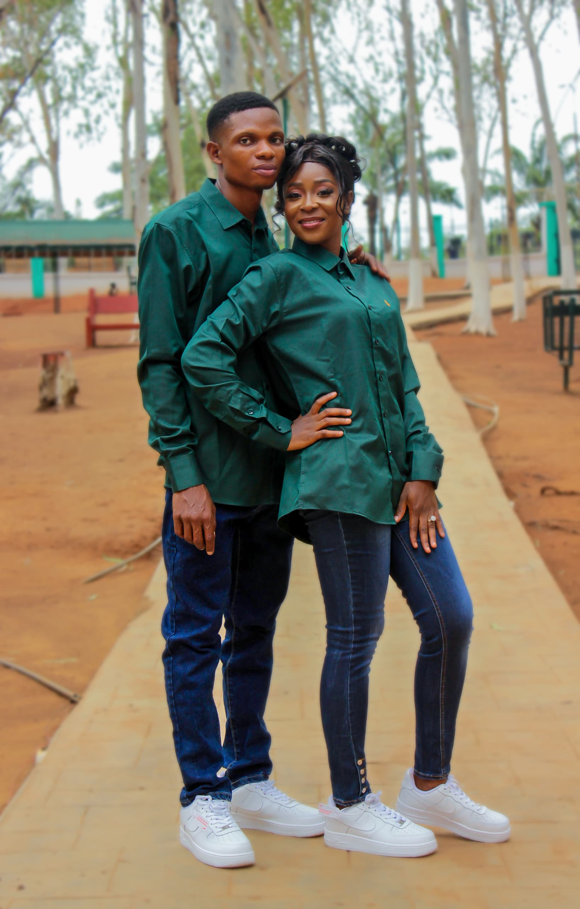
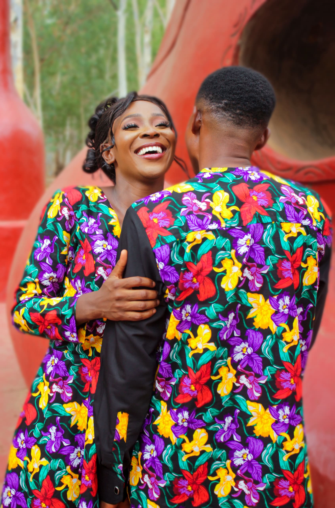

<section
  id="gallery"
  class="py-16 sm:py-24 bg-amber-50 text-center relative overflow-hidden"
  data-motion="gallery-section"
>
  <!-- Subtle Floral Background Pattern (Optional) -->
  <div
    class="absolute inset-0 opacity-10 bg-[url('/images/floral-pattern.png')] bg-repeat"
    aria-hidden="true"
  ></div>

  <!-- Content -->
  <div class="relative z-10">
    <!-- Floral Divider (Top) -->
    <div class="flex justify-center mb-6">
      <svg
        class="w-20 h-8 text-rose-300"
        fill="none"
        stroke="currentColor"
        viewBox="0 0 64 32"
      >
        <path
          stroke-linecap="round"
          stroke-linejoin="round"
          stroke-width="2"
          d="M32 4c4 0 6 2 6 6s-2 6-6 6-6-2-6-6 2-6 6-6zm0 0v12m-12 8h24m-18-8a2 2 0 100-4 2 2 0 000 4zm24 0a2 2 0 100-4 2 2 0 000 4z"
        />
      </svg>
    </div>

    <h2
      class="text-3xl sm:text-4xl md:text-5xl font-serif font-bold text-rose-800 mb-8 tracking-wide"
      data-motion="gallery-title"
    >
      Gallery
    </h2>

    <div class="grid grid-cols-2 sm:grid-cols-3 lg:grid-cols-4 gap-4 sm:gap-6 px-4 max-w-6xl mx-auto">
      <div class="relative group gallery-item" data-motion="gallery-image" data-index="0">
        
        <div class="absolute inset-0 bg-rose-900/30 opacity-0 group-hover:opacity-100 transition-opacity duration-300 rounded-lg"></div>
      </div>
      <div class="relative group gallery-item" data-motion="gallery-image" data-index="1">
        
        <div class="absolute inset-0 bg-rose-900/30 opacity-0 group-hover:opacity-100 transition-opacity duration-300 rounded-lg"></div>
      </div>
      <div class="relative group gallery-item" data-motion="gallery-image" data-index="2">
        
        <div class="absolute inset-0 bg-rose-900/30 opacity-0 group-hover:opacity-100 transition-opacity duration-300 rounded-lg"></div>
      </div>
      <div class="relative group gallery-item" data-motion="gallery-image" data-index="3">
        
        <div class="absolute inset-0 bg-rose-900/30 opacity-0 group-hover:opacity-100 transition-opacity duration-300 rounded-lg"></div>
      </div>
      <div class="relative group gallery-item" data-motion="gallery-image" data-index="4">
        
        <div class="absolute inset-0 bg-rose-900/30 opacity-0 group-hover:opacity-100 transition-opacity duration-300 rounded-lg"></div>
      </div>
      <div class="relative group gallery-item" data-motion="gallery-image" data-index="5">
        
        <div class="absolute inset-0 bg-rose-900/30 opacity-0 group-hover:opacity-100 transition-opacity duration-300 rounded-lg"></div>
      </div>
      <div class="relative group gallery-item" data-motion="gallery-image" data-index="6">
        
        <div class="absolute inset-0 bg-rose-900/30 opacity-0 group-hover:opacity-100 transition-opacity duration-300 rounded-lg"></div>
      </div>
      <div class="relative group gallery-item" data-motion="gallery-image" data-index="7">
        
        <div class="absolute inset-0 bg-rose-900/30 opacity-0 group-hover:opacity-100 transition-opacity duration-300 rounded-lg"></div>
      </div>
      <div class="relative group gallery-item" data-motion="gallery-image" data-index="8">
        
        <div class="absolute inset-0 bg-rose-900/30 opacity-0 group-hover:opacity-100 transition-opacity duration-300 rounded-lg"></div>
      </div>
      <div class="relative group gallery-item" data-motion="gallery-image" data-index="9">
        
        <div class="absolute inset-0 bg-rose-900/30 opacity-0 group-hover:opacity-100 transition-opacity duration-300 rounded-lg"></div>
      </div>
    </div>

    <!-- Floral Divider (Bottom) -->
    <div class="flex justify-center mt-8">
      <svg
        class="w-20 h-8 text-rose-300"
        fill="none"
        stroke="currentColor"
        viewBox="0 0 64 32"
      >
        <path
          stroke-linecap="round"
          stroke-linejoin="round"
          stroke-width="2"
          d="M32 4c4 0 6 2 6 6s-2 6-6 6-6-2-6-6 2-6 6-6zm0 0v12m-12 8h24m-18-8a2 2 0 100-4 2 2 0 000 4zm24 0a2 2 0 100-4 2 2 0 000 4z"
        />
      </svg>
    </div>
  </div>
</section>